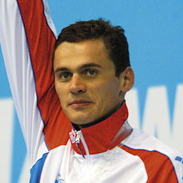
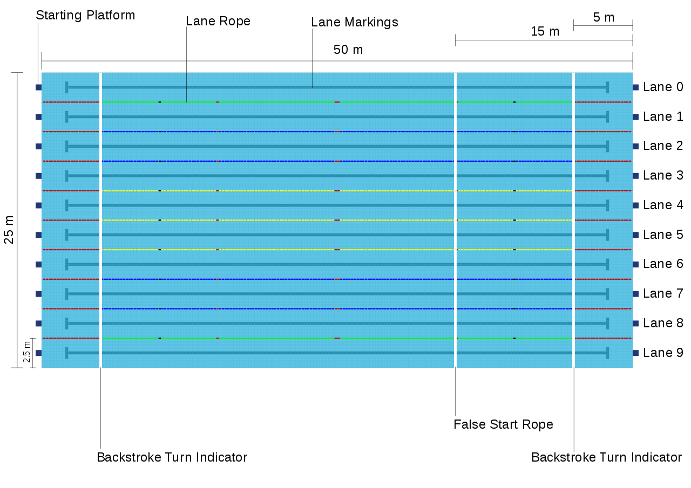

“The water is your friend... you don't have to fight with water, just share the same spirit as the water, and it will help you move.”
— Alexander Popov
Check out this cool website - krstps.lv
What is swimming?
Swimming is an individual or team racing sport that requires the use of one's entire body to move through water. The sport takes place in pools or open water (e.g., in a sea or lake). Competitive swimming is one of the most popular Olympic sports, with varied distance events in butterfly, backstroke, breaststroke, freestyle, and individual medley. In addition to these individual events, four swimmers can take part in either a freestyle or medley relay. A medley relay consists of four swimmers who will each swim a different stroke, ordered as backstroke, breaststroke, butterfly and freestyle. Swimming each stroke requires a set of specific techniques; in competition, there are distinct regulations concerning the acceptable form for each individual stroke. There are also regulations on what types of swimsuits, caps, jewelry and injury tape that are allowed at competitions. Although it is possible for competitive swimmers to incur several injuries from the sport, such as tendinitis in the shoulders or knees, there are also multiple health benefits associated with the sport.
Swim styles
In competitive swimming, four major styles have been established. These have been relatively stable over the last 30–40 years with minor improvements. They are: (click to learn more)
Competition pools
World Championship pools must be 50 metres (160 ft) (long course) long and 25 metres (82 ft) wide, with ten lanes labelled zero to nine (or one to ten in some pools; zero and nine (or one and ten) are usually left empty in semi-finals and finals); the lanes must be at least 2.5 metres (8.2 ft) wide. They will be equipped with starting blocks at both ends of the pool and most will have Automatic Officiating Equipment, including touch pads to record times and sensors to ensure the legality of relay takeovers. The pool must have a minimum depth of two metres. Other pools which host events under FINA regulations are required to meet some but not all of these requirements. Many of these pools have eight, or even six, instead of ten lanes and some will be 25 metres (82 ft) long, making them Short course. World records that are set in short course pools are kept separate from those set in long course pools because it may be an advantage or disadvantage to swimmers to have more or less turns in a race.
Officials
There are several types of officials, which are needed to manage the competition:
-
Referee
The referee has full control and authority over all officials. The referee will enforce all rules and decisions of FINA and shall have the final answer to all questions relating to the actual conduct of anything regarding the meet, as well as the final settlement of which is not otherwise covered by the rules. The referee takes overall responsibility for running the meet and makes the final decisions as to who wins each race. Referees call swimmers to the blocks with short blasts of their whistles. This is the signal for the swimmers to stand next to their blocks. Then the referee will blow a long whistle that will tell the swimmers to step on the block. For backstroke events, the long whistle is the signal for the swimmers to jump into the water. The referee will then blow another long whistle, signalling the swimmers to grab the gutter or the provided block handle. Finally the referee will hand over the rest to the starter by directing their hand to the starter.
-
Starter
The starter has full control of the swimmers from the time the referee turns the swimmers over to them until the race commences. A starter begins the race by saying, "Take your mark." At this point, the swimmers will get into stationary positions in which they would like to start their race. After all swimmers have assumed their stationary position, the starter will push a button on the starting system, signaling the start of a race with a loud noise (usually a beep or a horn) and flash from a strobe light. A starter sends the swimmers off the blocks and may call a false start if a swimmer leaves the block before the starter sends them. A starter may also choose to recall the race after the start for any reason or request the swimmers to "stand", "relax" or "step down" if they believe that (a) particular swimmer(s) has gotten an unfair advantage at the start.
-
Clerk of course
The clerk of course (also called the "bullpen") assembles swimmers prior to each event, and is responsible for organizing ("seeding") swimmers into heats based on their times. Heats are generally seeded from slowest to fastest, where swimmers with no previous time for an event are assumed to be the slowest. The clerk of the course is also responsible for recording and reporting swimmers who have chosen to "scratch" (not swim) their events after they have signed up or qualified to a semifinal or final. The clerk is also responsible for enforcing rules of the swim meet if a swimmer chooses to not show up ("No show" - NS) to their events.
-
Timekeepers
Each timekeeper takes the time of the swimmers in the lane assigned to them. Unless a video backup system is used, it may be necessary to use the full complement of timekeepers even when automatic officiating equipment is used. A chief timekeeper assigns the seating positions for all timekeepers and the lanes for which they are responsible. In most competitions there will be one or more timekeepers per lane. In international competitions where full automatic timing and video placing equipment is in use timekeepers may not be required.
-
Inspectors of turns
Inspectors of turns: One inspector of turns is assigned to one or more lanes at each end of the pool. Each inspector of turns ensures that swimmers comply with the relevant rules for turning, as well as the relevant rules for start and finish of the race. Inspectors of turns shall report any violation on disqualification reports detailing the event, lane number, and the infringement delivered to the chief inspector of turns who will immediately convey the report to the referee.
-
Judges of stroke
Judges of stroke are located on each side of the pool. They follow the swimmers during their swim back and forth across the pool. They ensure that the rules related to the style of swimming designated for the event are being observed, and observe the turns and the finishes to assist the inspectors of turns.
-
Finish judges
Finish judges determine the order of finish and make sure the swimmers finish in accordance with the rules (two hands simultaneously for breaststroke and butterfly, on the back for backstroke, etc.)
Famous swimmers
Michael Phelps
Michael Fred Phelps II (born June 30, 1985) is an American former competitive swimmer. He is the most successful and most decorated Olympian of all time with a total of 28 medals. Phelps also holds the all-time records for Olympic gold medals (23), Olympic gold medals in individual events (13), and Olympic medals in individual events (16). When Phelps won eight gold medals at the 2008 Beijing Games, he broke fellow American swimmer Mark Spitz's 1972 record of seven first-place finishes at any single Olympic Games. At the 2004 Summer Olympics in Athens, Phelps already tied the record of eight medals of any color at a single Games by winning six gold and two bronze medals. At the 2012 Summer Olympics in London, Phelps won four gold and two silver medals, and at the 2016 Summer Olympics in Rio de Janeiro, he won five gold medals and one silver. This made him the most successful athlete of the Games for the fourth Olympics in a row.
Adam Peaty
Adam George Peaty (born 28 December 1994) is an English competitive swimmer who specialises in the breaststroke. He won the gold medal in the 100 metre breaststroke at the 2016 Summer Olympics, the first by a male British swimmer in 24 years, and retained the title at the 2020 Summer Olympics in 2021, the first British swimmer ever to retain an Olympic title. He is also an eight-time World Champion, a sixteen-time European Champion and a four-time Commonwealth Champion. According to FINA itself, Peaty is widely regarded as the dominant breaststroke swimmer of his era, and the most dominant sprint breaststroke swimmer of all time.
Caeleb Dressel

Caeleb Remel Dressel (born August 16, 1996) is an American professional swimmer who specializes in freestyle, butterfly, and individual medley events. He swims representing the Cali Condors as part of the International Swimming League. He won a record seven gold medals at the 2017 World Aquatics Championships in Budapest, nine medals, six of which were gold, at the 2018 World Swimming Championships in Hangzhou, and eight medals, including six gold, at the 2019 World Aquatics Championships in Gwangju. Dressel is a seven-time Olympic gold medalist and holds world records in the 100 meter butterfly (long course and short course), 50 meter freestyle (short course), and 100 meter individual medley (short course).
Quiz
Let's see how carefully have you been reading with a little quiz:
-
How many swim styles are there?
-
How long is World Championship long course pool?
-
Which official has full control and authority over all officials?
-
Which of these swimmers specializes in breaststroke?